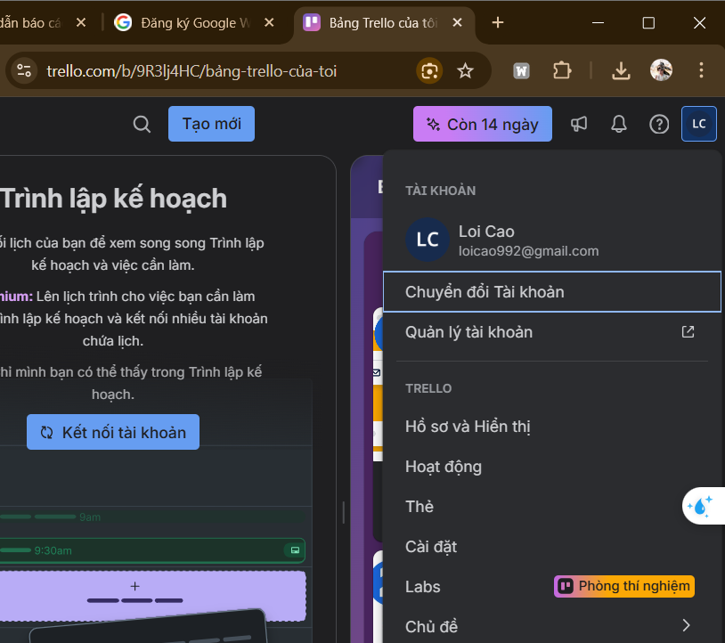
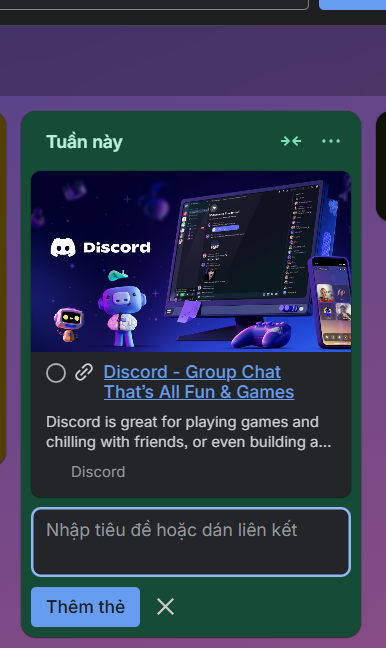
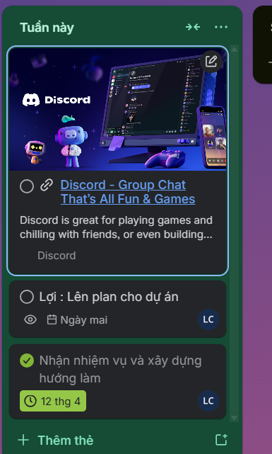
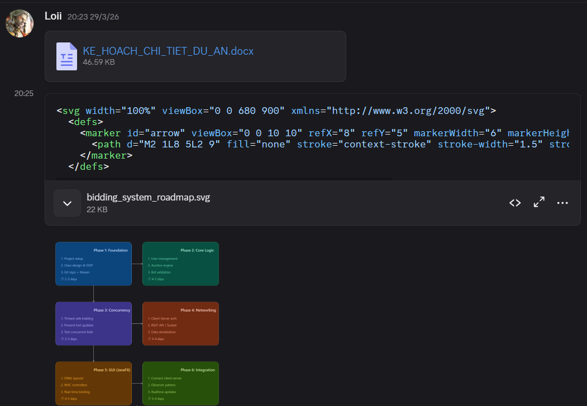
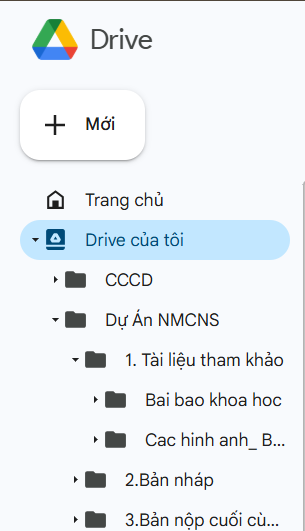

BÁO CÁO CÁ NHÂN: KỸ NĂNG HỢP TÁC VÀ LÀM VIỆC NHÓM TRỰC TUYẾN
Thông tin sinh viên:
I. MỤC TIÊU VÀ PHẠM VI BÁO CÁO
Báo cáo này trình bày chi tiết về quá trình tôi tham gia vào dự án "[Tên dự án]" cùng nhóm của mình, tập trung vào việc ứng dụng các công cụ hợp tác trực tuyến để tối ưu hóa hiệu quả công việc. Mục tiêu chính là minh chứng khả năng thiết lập, sử dụng linh hoạt ít nhất 3 công cụ khác nhau thuộc các nhóm: quản lý dự án, soạn thảo tài liệu chung và giao tiếp nhóm; đồng thời thể hiện kỹ năng quản lý công việc cá nhân, tương tác với các thành viên và tổ chức tài nguyên khoa học.
II. LỰA CHỌN VÀ THIẾT LẬP CÔNG CỤ
Để đảm bảo dự án diễn ra trơn tru, tôi đã chủ động đề xuất và cùng nhóm thống nhất sử dụng một hệ sinh thái gồm 3 công cụ chính, mỗi công cụ phục vụ một mục đích cụ thể:

Hình 1: Hồ sơ cá nhân trên Trello với đầy đủ thông tin.

Hình 2: Tích hợp giữa Trello và Discord giúp quản lý tài liệu liền mạch.
III. QUẢN LÝ TÁC VỤ VÀ TƯƠNG TÁC CÁ NHÂN
Trong suốt quá trình thực hiện dự án (1 tuần đánh giá), tôi đã thể hiện sự chủ động trong việc quản lý tiến độ cá nhân và hỗ trợ nhóm.
1. Quản lý tác vụ trên Trello
Tôi đã chủ động tạo các thẻ (cards) cho các nhiệm vụ được giao, gán tên mình (Assignee) và đặt thời hạn (Due date) cụ thể cho 100% các tác vụ. Để tăng tính trực quan, tôi sử dụng hệ thống Nhãn (Labels) để phân loại mức độ ưu tiên (Đỏ: Gấp, Vàng: Bình thường) hoặc loại công việc (Xanh: Nghiên cứu, Tím: Viết báo cáo). Tôi cập nhật tiến độ công việc hàng ngày (chuyển thẻ từ "To Do" -> "Doing" -> "Done").

Hình 3: Quản lý tác vụ cá nhân trên Trello với deadline và nhãn dán rõ ràng.
2. Tương tác và Giao tiếp
Sự liên tục là chìa khóa thành công. Trên Discord, tôi không chỉ báo cáo tiến độ mà còn chủ động thảo luận, đưa ra ý kiến và hỗ trợ các thành viên khác khi họ gặp khó khăn.

Hình 4: Trao đổi công việc và đóng góp ý kiến trên kênh giao tiếp chung.
IV. QUẢN LÝ TÀI NGUYÊN VÀ TỆP TIN
Việc tổ chức dữ liệu khoa học giúp cả nhóm tiết kiệm thời gian tìm kiếm. Tôi được phân công quản lý thư mục [Tên thư mục, VD: Tài liệu Tham khảo/Báo cáo] trên [Google Drive/OneDrive].
1. Cấu trúc thư mục (Nhiều cấp)
Tôi đã thiết lập một hệ thống thư mục logic, phân cấp rõ ràng để lưu trữ tài liệu cá nhân phụ trách:
2. Quy tắc đặt tên và Quyền truy cập

Hình 5: Cấu trúc thư mục đa cấp lưu trữ tài liệu khoa học..
3. Đóng góp nội dung trực tiếp
Trên Google Docs, tôi đã tham gia soạn thảo trực tiếp phần [Tên phần bạn viết, VD: Tổng quan dự án].
V. ĐÁNH GIÁ VÀ GIẢI PHÁP THÁCH THỨC
1. Đánh giá hiệu quả của các công cụ
Việc áp dụng các công cụ trực tuyến đã mang lại hiệu quả to lớn cho hiệu suất làm việc cá nhân của tôi:
2. Các thách thức gặp phải và Cách giải quyết
Trong quá trình làm việc nhóm trực tuyến, tôi đã gặp phải 3 thách thức chính và đã chủ động tìm cách khắc phục:
Thách thức 1: Xung đột lịch trình và khó khăn trong việc họp nhóm đồng bộ. Do mỗi thành viên có lịch học/làm việc khác nhau, việc tìm một khung giờ chung để họp trực tuyến (video call) rất khó khăn, dẫn đến việc thiếu đồng bộ thông tin ở giai đoạn đầu.
Thách thức 2: Quá tải thông tin (Information Overload) trên kênh chat. Trong giai đoạn nước rút, nhóm trao đổi rất nhiều trên [Discord/Zalo/Slack]. Các thông tin quan trọng như link tài liệu, chốt quyết định thường bị trôi đi rất nhanh giữa các tin nhắn thảo luận bình thường.
Thách thức 3: Xung đột khi chỉnh sửa chung tài liệu (Edit Conflicts). Khi sử dụng Google Docs, có thời điểm hai thành viên cùng chỉnh sửa một đoạn văn bản gây ra sự lộn xộn và mất ý tưởng của nhau.
VI. KẾT LUẬN
Quá trình tham gia dự án này đã giúp tôi nâng cao đáng kể kỹ năng sử dụng các công cụ làm việc cộng tác. Việc áp dụng kỷ luật trong quản lý tác vụ (Trello), tổ chức lưu trữ khoa học (Google Drive), và chủ động giao tiếp (Discord) không chỉ giúp tôi hoàn thành tốt nhiệm vụ cá nhân mà còn đóng góp tích cực vào tiến độ chung của cả nhóm. Những kỹ năng giải quyết vấn đề linh hoạt khi gặp khó khăn trong làm việc nhóm trực tuyến chắc chắn sẽ là hành trang quý báu cho quá trình học tập và làm việc sau này